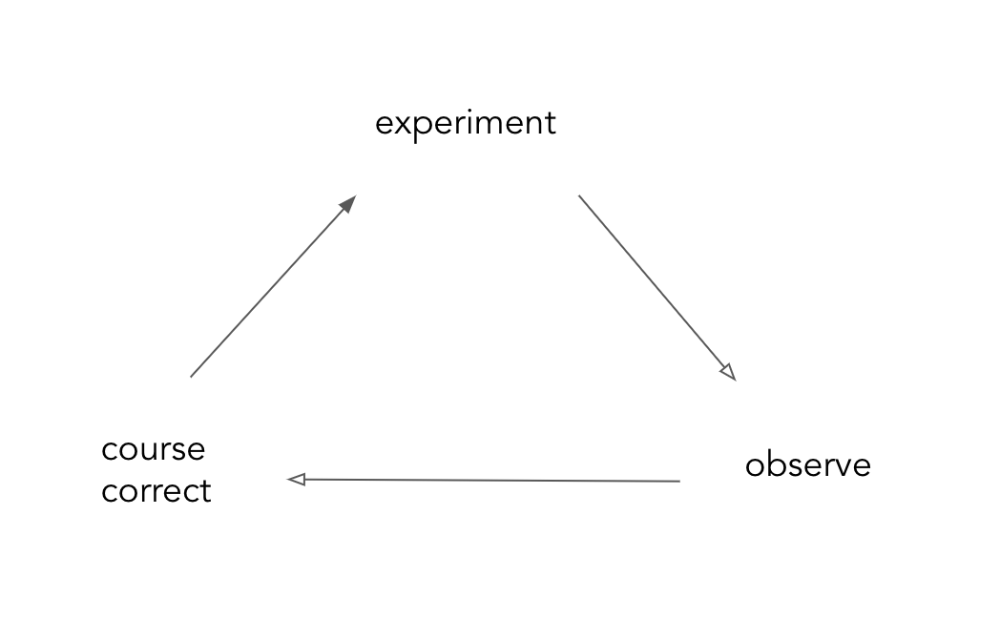

Iterative improvement is the basis of most modern project management principles (agile/xp/scrum..). It follows the Scientific Method. The steps are simple and intuitive, indeed they follow how we learn most things - by trying and failing and trying again. So in case you have a system that you want to improve - 
- Experiment - formalise and execute the change you expect to make in the system
- Observe - Observe the effect(s) of said change
- Course Correct - From these observations, find out if changes in the experiments are needed, and then make them.
and repeat, till you are satisfied with the desired improvement. This is it, this is the basis of a virtuous improvement cycle. To improve any system - software or process or cooking, just follow the 3 step plan.
Aspects of the process that need care -
- Experiment Design - experiments (or changes in the system) should be uniquely identifiable & revertable. Along with this, for improved ability to attribute results, its advisable to serialise executing experiments. Its also important to know the metric that will be used to define success of an experiment
- Instrumentation - in order to be able to observe the effect of changes to a stable system, instrumentation design (which metrics are expected to move because of the change made) should be part of the experiment design
- Observability is the property of a system that enables an external auditor to infer a clear picture of the effects of any change being made across all parts of the system. If the right probes aren’t designed, course correction shouldn’t be expected to move in the right direction.